分享相关网络知识及日常生活(...看心情...),也希望这些知识能够有所帮助.
Good Good Study! Day Day Up!!
From Wikipedia:
Lantern是一个免费的开源对等互联网审查规避工具，用于休闲网页浏览。它提供了一种通过可信用户网络绕过国家认可的过滤的方法，但它不是像Tor这样的匿名工具。使用Lantern，拥有免费互联网接入的国家/地区的用户可以与网络部分被阻止的国家地区的用户共享带宽。网络连接将分散在运行Lantern的多台计算机之间，因此不会对单个连接或计算机施加过度的压力。
2013年12月初，Lantern的中国用户激增，仅用了两周就可以将200个用户扩展到10,000个用户。此后不久，该网络几乎被中国政府封锁。
官方下载地址——>>^Lantern-US^
国内下载地址——>>^Lantern-CHN^
GitHub下载地址——>>^Lantern-GitHub^
Lantern的使用非常简单，下载安装包安装后，点击图标待网页加载完成后便可以直接使用。如图——>>
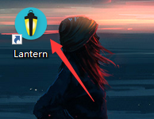
成功启动！
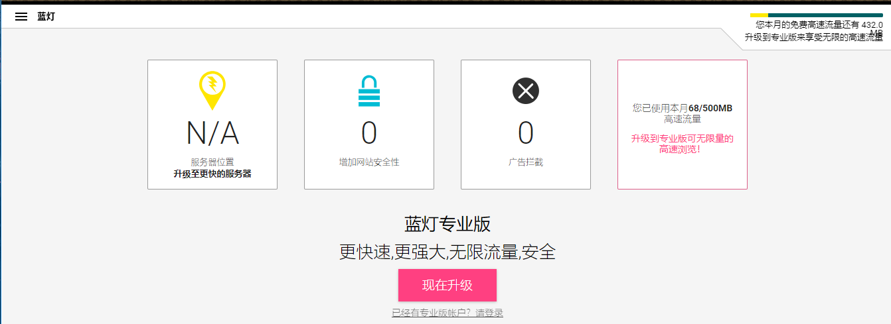
成功访问推特（twitter）
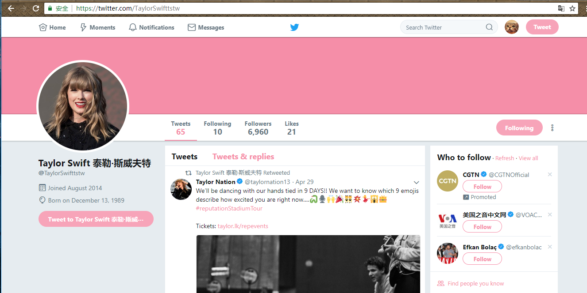
免费版本的Lantern也存在一定的缺陷，比如有流量限制且网速较慢，有条件的可以将其升级为专业版(￥216/年)
SS：ss作者是clowwindy，大约两年前，他自己为了翻墙写了shadowsocks，简称ss或者叫影梭，后来他觉得这个东西非常好用，速度快，而且不会被封锁，他就把源码共享在了github上，然后就火了，但是后来作者被请去喝茶，删了代码，并且保证不再参与维护更新。现在这个好像是一个国外的大兄弟在维护。
SSR：在ss作者被请喝茶之后，github上出现了一个叫breakwa11(破娃)的帐号，声称ss容易被防火墙检测到，所以在混淆和协议方面做了改进，更加不容易被检测到，而且兼容ss，改进后的项目叫shadowsocks-R，简称ssr，然后ss用户和ssr用户自然分成了两个派别，互相撕逼，直到前阵子，破娃被人肉出来，无奈之下删除了ssr的代码，并且解散了所有相关群组。
代理服务商-爱喵云是属于付费代理，价格相对便宜（￥12/月）。以下为使用方法————>>
下载SSR————>>ShadowsocksR
访问爱喵云并购买代理套餐————>>Catlovers Home Or ilovecat
打开ShadowsocksR-dotnet2.0/4.0
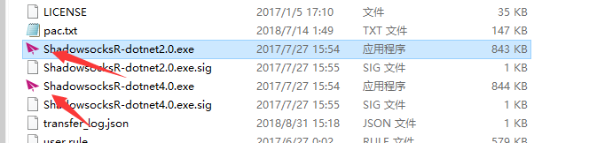
右键打开ShadowsocksR小图标中的SSR服务器订阅设置，并将从爱喵云获取的单端口地址设置进去
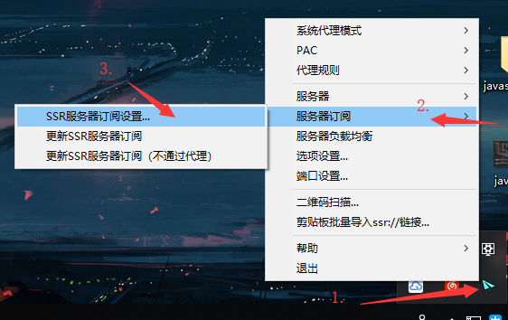
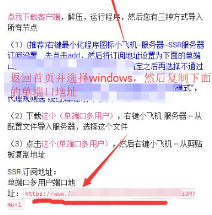
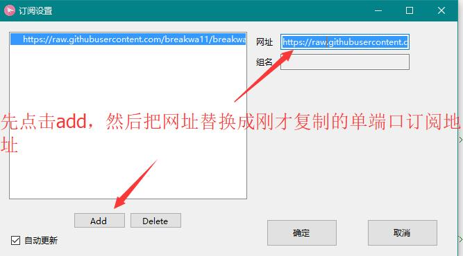
设置成功后,右键小图标选择一个想用的节点，并把系统代理模式切换为PAC模式或者全局模式及代理规则改为绕过局域网和大陆
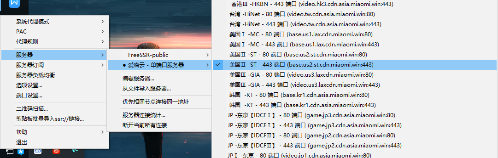
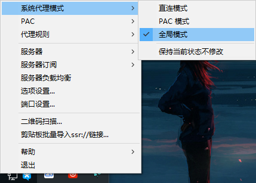
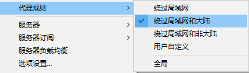
设置成功后便可以访问twitter
这篇博客是我在暑假期间观看电影 《Who Am I - Kein System ist sicher》（2014）（我是谁：没有绝对安全的系统）后知道了深网和暗网这两个概念。 我利用暑假时间对相关知识在网上查询了解，发现网上的内容五花八门，也存在许多误区。于是乎我写这篇博客用来扫盲，对象则是针对包括非专业的普通大众。 此文只做概念分析没有具体教程。
深网？
根据维基百科可以看出“深网”并不只是指网络站点，它的范围远大于一般的网站，它包括所有不能被搜索引擎抓取到的网络内容，比如：你的QQ聊天纪录等各类社交平台的私信纪录。还有如SSH、VPN等非标准80或443端口且不走标准HTTP/HTTPS协议的内容等。 所以可能对于我们来说我们可能无时不刻都在和深网打交道，但是由于“不同用户抓取到的内容不同”，如：你女神对你屏蔽的朋友圈对你来说也是”深网”，而对她自己来说自然就是个普通的表层网络。所以讨论”深网”的时候只能取绝对参照物——搜索引擎。深网其实是一个仅针对搜索引擎的概念，表示不能被其抓取到的私有内容
暗网？
暗网是深网的子集，且暗网的重点在于”暗”，属于网络上的黑市，这里面有很多暴力，色情，黑产等相关的东西，比如军火、假护照、信用卡、用户信息、0day等等。网络上大部分阴谋论相关的文章也都是从暗网这些阴暗点做切入点进行发散创作 由于进入暗网需要的一点点技术门槛（国外是TOR国内是VPN+TOR）导致网上很多相关内容都开始搞阴谋论和超自然分析夺人眼球。
暗网和深网是同一个东西？
这个是最常见的误区，网上许多内容，对暗网和深网的描述含糊不清，往往标题里写着”深网”结果写着写着就成了”暗网”。如：《一篇关于 DEEP WEB 的简易指南》和 《暗网，一个比你想象中恐怖100倍的互联网世界》，这两篇文章的内容便是典型的误导人。我们也说过，暗网是深网的子集，两者并不完全相同。
暗网的内容占了互联网全部内容的96%？
首先，这句话出自纸牌屋：”Deep Web is 96 percent of the Internet, with us plebes only seeing a mere 4 percent.”,可见原文说的是”深网的内容占了互联网内容的4%”而不是”暗网”。而网上其实也是”深网””暗网”弄混了而已。
想要反驳这个误区其实非常简单：
1.因为暗网本身的用户量就是相当少，可能只占网民的x万分之一，这种比例下他们的内容产出不可能超越作为大多数的普通网民所构建的普通网络
2.Apple、Google、Facebook、Amazon、腾讯、阿里巴巴、百度等公司每年在硬件和带宽上的成本至少加起来上百亿人民币，如果暗网本身内容是表层网络的几十倍的话，那他们的成本就更可怕了。然而全部暗网的流水加起来估计都覆盖不了这里的零头。而如果是深网的话这句话是没有多少问题的，这里先不论4%这个数字是否准确（因为按照有些人的计算google收录的不只4%，然而这点不好证伪，所以姑且认为是4%吧）。因为互联网大部分用户数据对搜索引擎而言都是不公开的。
暗网非常危险，多数是血腥恐怖的内容？
这个也不完全算谣言，随着网上访问暗网方式教程的增多，我们知道可以通过VPN+TOR隐藏IP访问。当然，要是有黑客有意黑你那就只能自认倒霉了。 而且暗网上的内容血腥暴力只能占少数，这些谣言大多数内容是被媒体过于渲染，把少数当多数。从暗网的大部分hidden wiki页面来看，暗网的主流内容还是各种交易市场：比特币、毒品、枪支、信用卡等等；再就是色情站点等，买凶相关的站点也有，但是非常血腥主题的确实基本上看不到（有些人大概会认为这说明他们藏的更深，找不到不代表就没有。但是这也从侧面证明了它们的小众，由这种极小部分人群作为暗网代表，我觉得相当缺乏说服力）。
对于深网和暗网，我只是向大家提供相关内容知识而已。对于暗网其中的利益链，我自己也并不是涉入太深，只对暗网进行了相关的了解。
贴一个暗网导航网站图
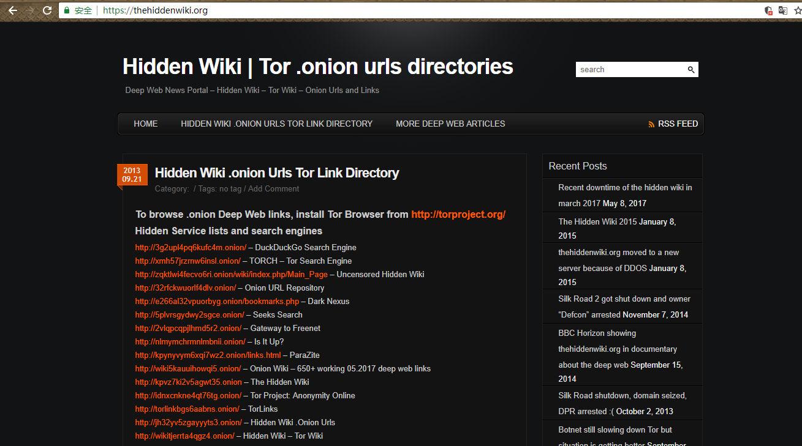
前些日子还有关于A站shell和内网权限在暗网被出售
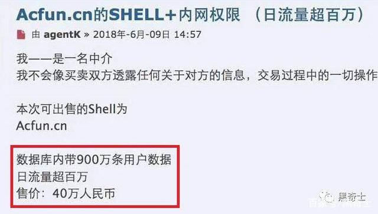
暗网上也会有一些清新脱俗的内容
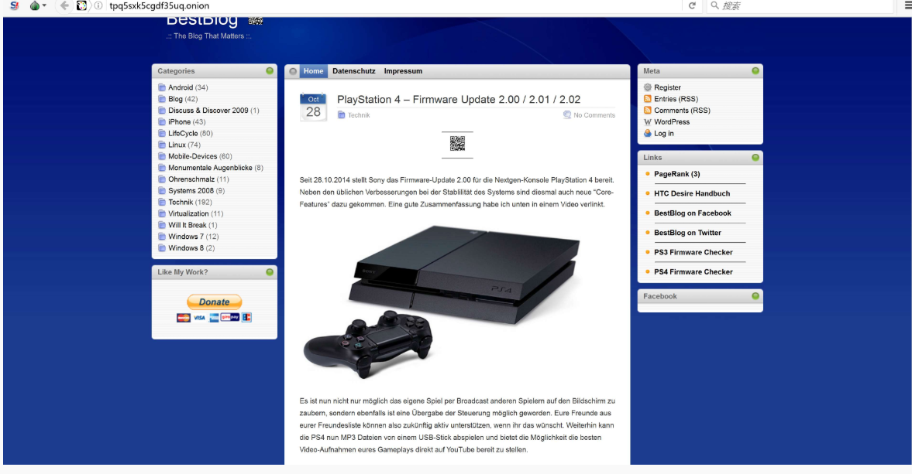
大家也可以尝试访问下暗网，注意不要做出触及法律的行为就行。访问方式网上有很多教程，可自行搜索。
一个很普通普通的伪技术宅，将成为传说中的全栈技术牛（以后会改）。目前离目标还很远，所以所以所以继续看下去把！！！